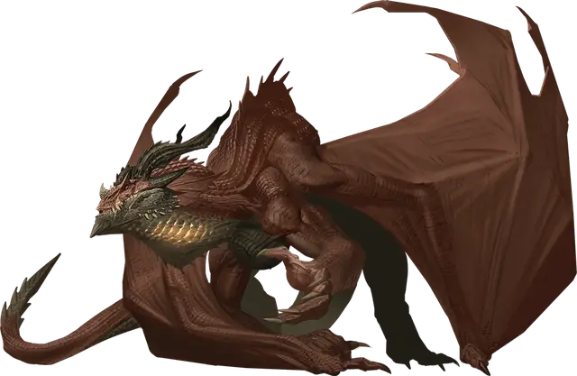

Уголь
Ember
Огромный Дракон (Взрослый цветной), хаотично-злой, именной НИП

Класс Доспеха 20 (Особое снаряжение)
Хиты 270 (20к12 + 140)
Скорость 40 футов, летая 80 футов, лазая 40 футов
| мод | спас | ||
|---|---|---|---|
| СИЛ | 28 | +9 | +9 |
| ЛОВ | 10 | +0 | +7 |
| ТЕЛ | 25 | +7 | +14 |
| мод | спас | ||
|---|---|---|---|
| ИНТ | 17 | +3 | +3 |
| МДР | 14 | +2 | +9 |
| ХАР | 22 | +6 | +13 |
Навыки Восприятие +16, Религия +10, Скрытность +14
Иммунитет к урону огонь
Чувства слепое зрение 60 футов, тёмное зрение 120 футов, пассивное Восприятие 26
Языки Общий, Бездны, Драконий
Опасность 22 (41000 опыта)
Бонус мастерства +7
Особенности
Обжигающая аура. В начале своего хода Уголь может заставить любое количество существ по своему выбору в радиусе 10 футов от себя совершить спасбросок Телосложения Сл 22. При провале существо получает 7 (2к6) урона огнем и становится испуганным Углём до начала своего следующего хода.
Легендарное сопротивление (5/день). Если Уголь проваливает спасбросок, он может вместо этого сделать его успешным.
Особое снаряжение. В бою Уголь облачается в волшебные латные доспехи, выкованные специально для него. Во время ношения доспехов Уголь добавляет свой модификатор Харизмы к броскам урона от оружия (включено в описание атаки), а его КД не может быть ниже 20.
Действия
Мультиатака. Уголь совершает одну атаку Укусом и две атаки Когтями.
Укус. Рукопашная атака оружием: +16 к попаданию, досягаемость 10 футов, одна цель. Попадание: 26 (2к10 + 15) колющего урона и 13 (2к6 + 6) урона огнем.
Коготь. Рукопашная атака оружием: +16 к попаданию, досягаемость 5 футов, одна цель. Попадание: 22 (2к6 + 15) рубящего урона.
Магматическое дыхание (перезарядка 5–6). Уголь выдыхает бушующее пламя и пепел в 90-футовом конусе. Все существа в этой области должны совершить спасбросок Ловкости Сл 22. При провале существо получает 56 (16к6) урона огнем, отбрасывается от Угля на расстояние до 30 футов и падает ничком. При успехе существо получает половину урона и не получает никаких других эффектов. Если под действием этого эффекта хиты существа снижаются до 0, цель умирает, а её тело превращается в пепел.
Бонусные действия
Изменение формы. Уголь магическим образом превращается в грифа [vulture] или мага [mage], сохраняя свое мировоззрение, иммунитеты к урону, хиты и кости хитов, как и значение Интеллекта, Мудрости и Харизмы. Превращение оканчивается если Уголь доведён до 0 хитов или использует свое бонусное действие для его окончания.
Легендарные действия
Уголь может совершить 3 легендарных действия, выбирая из представленных ниже вариантов. За один раз можно использовать только одно легендарное действие, и только в конце хода другого существа. Лич восстанавливает использованные легендарные действия в начале своего хода.
Преследование. Уголь перемещается на расстояние до 40 футов по прямой к выбранному существу, которое он может видеть. Это перемещение не вызывает провоцированных атак.
Обжигающий укус (стоит 2 действия). Уголь совершает одну атаку Укусом. При попадании атака наносит дополнительно 7 (2к6) урона огнем.
Описание
Уголь, также известный как Пирос - это властный и безжалостный красный дракон, который служит королеве драконов Такхизис. По долгу службы Уголь менял множество обличий, даже примерял черную мантию члена Магов Высшего Колдовства, но больше всего он известен как советник Верховного военачальника Верминаарда, предводителя армии красных драконов. Одаренный силой самой Такхизис, Уголь способен испепелить всех, кто оказывается поблизости, а его боевое дыхание - это магматический поток из пепла и пламени. В сражении Уголь облачен в волшебные латные доспехи, которые увеличивают его и без того впечатляющую мощь, позволяя ему с поразительной легкостью уничтожать целые отряды.
Император Ариакас.
Во славу имени Королевы Драконов! Наши замыслы относительно Абанасинии развиваются в соответствии с вашими планами. И все это не благодаря так называемому советнику, которым я был обременен, дракону Углю Это чудовище воистину ужасно, как по силе, так и по хитрости, но оно подрывает все мои планы и вселяет страх в мои войска. Он слишком умен, чтобы оставлять улики, но я уверен, что часть войск, которые мы потеряли из-за засад Квалинести, на самом деле покоится в его нутре. Он думает, что я не слышу как он шепчет проклятия в ответ на каждое мое распоряжение. Если бы он не был одним из любимых детей нашей королевы, я бы заменил постельное белье его шкурой.
Я доведу дело нашей королевы до конца с имеющимися в моем распоряжении войсками, но когда я вернусь в Нераку, я бы потребовал перевести эту сволочь в другое подразделение. Рекомендую в Ледяную Стену.
Её волей, Верминаард
Верховный военачальник армии Красного Дракона